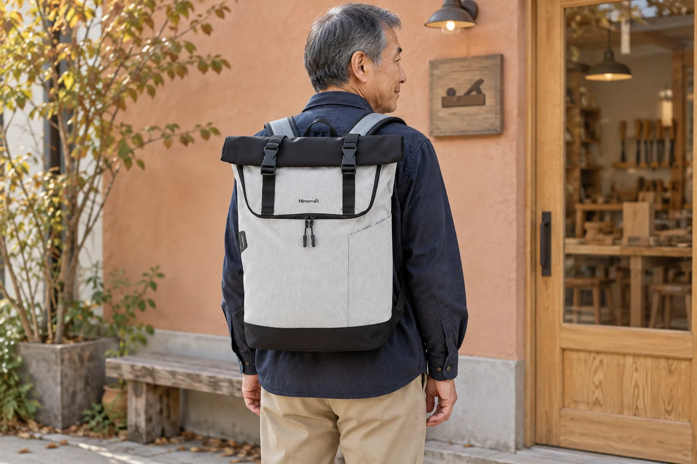
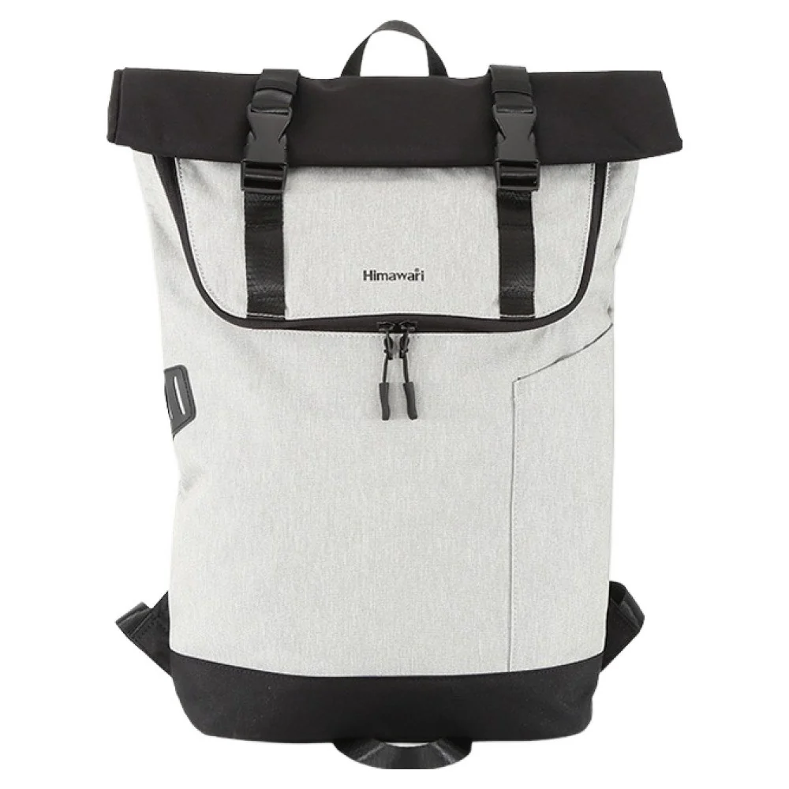

롤업 백팩에 남겨둘 입구의 자리

롤업 백팩을 고를 때에는 입구가 펼쳐진 모습이 넉넉해 보여 눈길이 갑니다. 물건을 다 넣은 뒤 닫으려 하면 다른 문제가 드러납니다. 맨 위에 세운 케이스가 접히는 자리를 차지하거나, 한쪽만 높게 올라와 여밈을 맞추기 어려울 수 있습니다. 몸체에 물건을 넣는 단계와 입구를 원래 형태로 닫는 단계를 함께 살펴야 출발 준비가 끝납니다.
닫히는 동작에도 공간이 필요하다
빈 가방을 제품의 사용 안내에 맞춰 한 번 닫아보면 입구가 움직이는 범위를 볼 수 있습니다. 어느 천이 접히고 어떤 연결부가 맞닿는지 살펴본 뒤 실제 짐을 넣으면 어디에서 움직임이 달라졌는지 비교하기 쉽습니다. 다른 롤업 제품의 사용 영상에서 본 접는 횟수를 그대로 가져오거나, 사진 한 장을 보고 여밈 방법을 확정할 필요는 없습니다. 자기 제품의 안내와 실제 상태를 기준으로 봅니다.
짐을 넣은 뒤에는 입구 바로 아래의 물건부터 살펴봅니다. 단단한 책 모서리나 세로로 세운 케이스가 닫히는 부분까지 올라오는지 확인합니다. 아래쪽이 비어 있다면 방향을 바꿀 수 있지만, 이미 빽빽한 상태에서 위에서 누르며 자리를 만들면 물건과 여밈이 함께 압박받을 수 있습니다. 하나를 꺼낸 뒤 닫힌 모양이 달라지는지 보는 방법으로 원인을 좁혀갈 수 있습니다.
여밈을 맞추는 데 힘이 필요해졌다고 곧바로 끈을 더 당기지 않습니다. 끈 길이의 문제인지, 접힌 천 사이에 물건이 남았는지, 한쪽으로 짐이 몰렸는지 구별합니다. 버클은 닫는 부품이지 안쪽 물건을 원하는 형태로 바꾸는 도구가 아닙니다. 안내한 방법으로 여밀 수 없다면 물건의 위치나 양을 먼저 조정하고, 부품이 걸리는 느낌이 있으면 상태를 다시 살펴봅니다.
No.1682 원본에서 확인되는 여밈
Himawari No.1682 그레이 원본 사진에는 가로로 접힌 검정 윗부분과 앞면의 검정 버클 두 개, 아래로 이어지는 끈이 보입니다. 이 모습에서는 양쪽 연결부를 따로 확인할 필요가 있다는 점을 읽을 수 있습니다. 한쪽 버클을 채웠다는 사실만으로 반대쪽까지 확인이 끝난 것은 아닙니다. 닫은 뒤에도 양쪽에 천이나 별도 소품이 끼지 않았는지 가까이 살펴봅니다.

사진에 보이는 앞면 지퍼는 외관의 정보입니다. 어느 공간으로 이어지는지, 자신이 가진 작은 물건을 넣기 좋은지는 원본 외관만으로 판단하기 어렵습니다. 지퍼가 있다는 이유로 자주 꺼낼 물건의 위치를 미리 정해버리기보다 실제 제품을 열어 입구와 안쪽을 확인합니다. 이동 중 필요한 물건을 다른 사람이 사용하는 위치에 맞출 필요도 없습니다. 자신의 여밈 동작에서 불편한 부분을 찾아 정하면 됩니다.
카탈로그의 외부 크기 30 × 50 × 14cm는 가로, 세로, 폭에 관한 표기입니다. 내부 칸의 유효 크기나 펼쳤을 때 늘어나는 수납량을 계산할 수 있는 수치는 아닙니다. 같은 세로 길이의 물건을 세워 넣으면 된다고 읽거나, 폭을 곱해 실제 용량을 정하지 않습니다. 닫힌 형태와 실제 짐을 함께 확인해야 하는 이유가 여기에 있습니다. 외부 숫자는 제품끼리 바깥 규모를 비교하는 참고로 둡니다.
다시 꺼낼 물건은 한 번 더 넣어 본다
출발 전에 확인할 종이를 입구 아래에 넣었다면 꺼내고 다시 담는 동작까지 해볼 수 있습니다. 처음에는 자연스럽게 닫혔어도 꺼낸 물건을 다른 방향으로 되넣으면 맨 위 높이가 달라질 수 있기 때문입니다. 다시 닫을 때 버클이 어디에 놓이는지, 입구에 손이 닿기 쉬운지 봅니다. 실제로 반복해서 꺼낼 물건이라면 그 동작을 기준으로 위치를 조정하는 편이 사진의 배치를 따라가는 것보다 도움이 됩니다.
정리의 예로 문서 케이스와 작은 파우치를 함께 넣을 계획이라면, 문서 케이스가 접히는 자리까지 올라오는지부터 봅니다. 들어간다는 확인과 자연스럽게 여밀 수 있다는 확인을 나누는 것입니다. 파우치가 위에 얹히며 높이가 달라진다면 옆으로 옮길 공간이 있는지도 살펴봅니다. 이는 수납을 검증한 결과가 아닌 확인 순서의 예입니다. 실제 크기와 짐 조합에 따라 따로 이동시킬 물건이 생길 수 있습니다.
방향을 바꾸는 과정에서 책 표지나 케이스 모서리가 접힌 천을 밀지 않는지도 살펴봅니다. 자주 꺼내는 물건이 아래에 묻혔다면 매번 입구를 크게 풀고 짐을 옮겨야 할 수 있습니다. 그날 필요한 횟수에 따라 물건의 우선순위를 바꿉니다. 하루에 한 번 꺼낼 자료와 이동 중 여러 번 꺼낼 물건을 같은 접근 조건으로 둘 필요는 없습니다. 실제 수납 구조가 허용하는 자리 안에서 정하면 됩니다.
닫힌 모양을 확인하는 마지막 순서
입구를 닫은 뒤에는 접힌 부분에 빠져나온 끈이나 소품이 없는지 보고 양쪽 버클을 각각 확인합니다. 정상 상태를 유지하기 어렵거나 여닫는 부분이 변형되어 보이면 더 세게 당겨 맞추지 않고 제품 안내나 문의로 확인합니다. 처음과 비교해 유난히 한쪽이 올라온 경우에도 짐 배치를 다시 살펴볼 수 있습니다. 모양을 맞추기 위한 압축보다 여밈이 제 역할을 하는지를 기준으로 봅니다.
롤업 형태만으로 물을 완전히 차단한다고 판단하지 않습니다. 비를 만날 가능성이 있다면 제품 관리 안내와 별도 소지품의 보호 방법을 확인합니다. 출발 준비에서는 그날 가져갈 짐을 넣고 정상적인 방식으로 닫을 수 있는지가 우선입니다. 자주 꺼낼 물건을 다시 넣은 뒤에도 같은 여밈이 유지된다면 입구까지 포함한 준비를 마친 상태로 볼 수 있습니다.